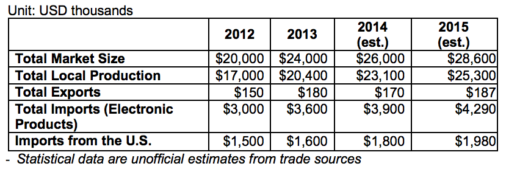

Brazil has an extensive and well-developed security market that registered an average annual growth of 10% for the last eight years with annual sales around US$26 billion, which includes private security services. Brazil’s market for electronic security equipment alone totals US$592 million and is expected to more than triple to US$1.8 billion by 2017. Foreign products account for approximately 50% of the electronic security total market share, with U.S. products representing half of these imports. The public and private sectors both have and continue to invest heavily in security equipment related to the 2014 World Cup and 2016 Summer Olympic Games.
For the past four years, while preparing for the Olympic Games, the state of Rio de Janeiro has been implementing an innovative safety program focused on so-called “UPP,” or Pacification Police Units, marking a radical shift in how Rio deals with violence and drug trafficking in the city’s “favelas” (shantytowns) . According to most statistics, the Pacification program has been positively received and the numbers relating to violence have been decreasing since 2008.
The largest clients in this market are the Government of Brazil (GOB), and financial and commercial institutions. For the Games and future major events, the federal government has created a specific agency under the Ministry of Justice, SESGE, charged with overall security planning and coordination for the World Cup and the Olympics.
At the state level, public security secretariats are promoting investments in the acquisition of new technologies in response to the increasing number of protests across the country. Command and control centers become the brain and the heart of the State Police agencies, which must simultaneously analyze and coordinate responses to ensure the safety of the general public. As in most other industry sectors, to be successful in Brazil foreign manufacturers must either establish themselves within the country or have a local representative. The GOB and private enterprise prefer to contact a local representative to handle all import procedures instead of contacting foreign suppliers directly.